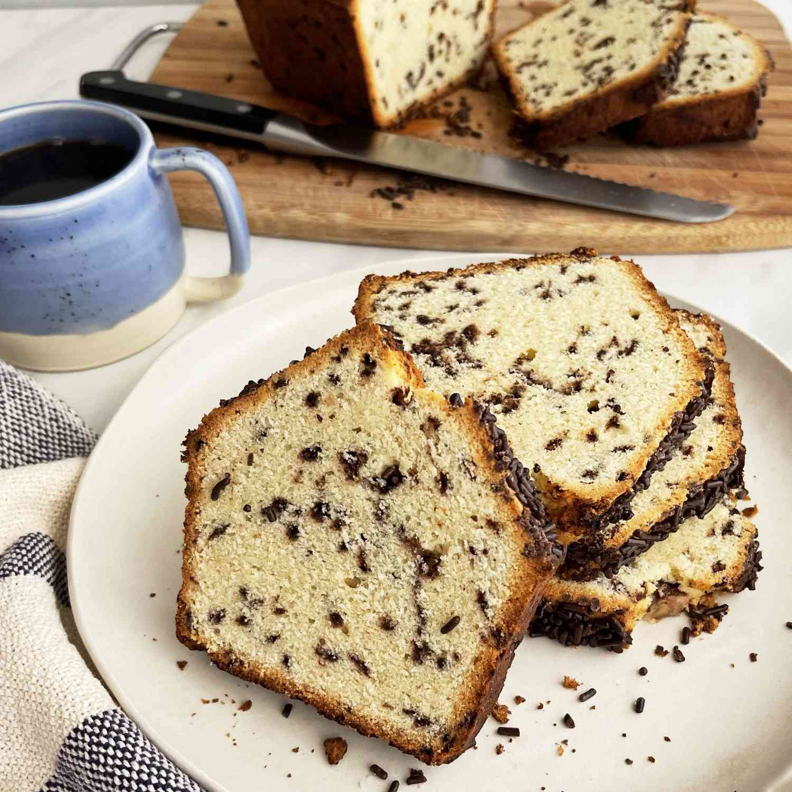

Home
Ottilienkuchen

Ottilienkuchen is a traditional German cake, often enjoyed during festive occasions. It is known for its rich flavor and moist texture, typically made with a combination of nuts, chocolate, and a hint of spice.
Ingredients
- 200g flour
- 100g sugar
- 150g butter
- 3 eggs
- 100g ground almonds
- 50g cocoa powder
- 1 tsp baking powder
- 1 tsp vanilla extract
- Pinch of salt
Instructions
- Preheat the oven to 180°C (350°F).
- In a bowl, cream together the butter and sugar until light and fluffy.
- Add the eggs one at a time, mixing well after each addition.
- Sift together the flour, cocoa powder, baking powder, and salt. Gradually add this to the butter mixture, alternating with the ground almonds.
- Stir in the vanilla extract.
- Pour the batter into a greased cake pan and smooth the top.
- Bake for 30-35 minutes, or until a toothpick inserted into the center comes out clean.
- Let the cake cool in the pan for 10 minutes, then transfer to a wire rack to cool completely.
- Once cooled, dust with powdered sugar or serve with whipped cream if desired.
Notes
This cake can be stored in an airtight container for up to a week. It also freezes well, making it a great option for preparing in advance for gatherings or special occasions.